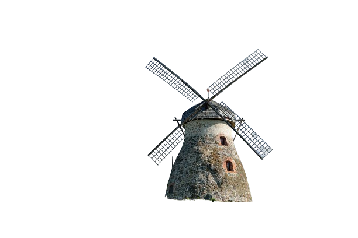
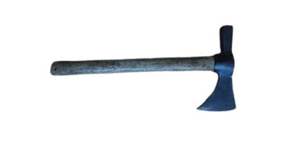
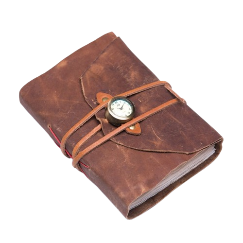

Introducere în Realism
- 
- 
- 
Realismul este un curent literar și artistic ce a apărut în a doua jumătate a secolului al XIX-lea, ca răspuns la romantism, care accentua emoția și exagerările stilistice. Realismul promovează o vedere pragmatică și adesea critică a lumii, concentrându-se pe reprezentarea exactă și neînfrumusețată a realității cotidiene.
Temele romanelor realiste includ parvenitismul, avariția, imoralitatea, singurătatea etc., iar motivele – parvenitul, avarul, zgârcitul. Compoziția este obiectivă, naratorul este omniscient și omniprezent. Subiectele sunt inspirate din realitate. Acțiunea se desfășoară pe mai multe planuri, iar conflictele sunt de natură socială, psihologică, politică etc. Personajele întruchipează mai multe categorii sociale, complex caracterizate, reprezintă tipuri umane. Structura unor astfel de opere literare este închisă. Se utilizează tehnica detaliului și se accentuează relația dintre mediu și personaj.
Originile și contextul realismului
Revoluția Industrială
Schimbările sociale și economice au influențat profund societatea.
1
Schimbări Politice
Transformările politice radicale au marcat epoca realismului.
3
Expansiunea Urbană
Creșterea orașelor a inspirat scriitorii și artiștii realiști.
2
Caracteristici Principale ale Realismului
1
Fidelitate în DescriereRedarea precisă și neidealizată a realității.
2
Personaje TipiceProtagoniști obișnuiți, influențați de context social.
3
Critică SocialăOpere impregnate de o analiză a inegalităților.
4
Limbaj NaturalUtilizarea unui limbaj direct, fără poeticitate excesivă.
Principali Autori și Opere Realiste
Gustave Flaubert și Émile Zola sunt figuri de referință ale realismului francez, cu opere precum "Doamna Bovary" și "Germinal".
Fiodor Dostoievski și Lev Tolstoi au integrat elemente realiste într-o viziune literară complexă și profundă.
Charles Dickens și Thomas Hardy au fost printre cei mai importanți reprezentanți ai realismului britanic, explorând viața claselor defavorizate.
Mihail Sadoveanu și George Călinescu au integrat elemente realiste într-o viziune literară complexă și profundă. Sadoveanu, prin operele sale ca "Hanul Ancuței" și "Baltagul", a capturat esența vieții rurale și a tradițiilor moldovenești, prezentând cu măiestrie peisaje, obiceiuri și dialoguri autentice. Călinescu, în "Enigma Otiliei", a oferit o radiografie detaliată a societății bucureștene de la începutul secolului XX, explorând dinamica relațiilor familiale și sociale într-un stil narativ realist.
Realismul în Literatura Română
Moștenirea Realismului
Realismul a stabilit un nou standard pentru autenticitate și acuratețe în reprezentarea realității, influențând și generațiile ulterioare de artiști și scriitori.
Operele realiste au adus în prim-plan problemele sociale ale epocii, devenind un instrument pentru reforma societății.
Realismul a extins domeniul narativ și tematic al literaturii și artei, oferind o varietate de noi perspective asupra lumii.
Studierea realismului în școli și universități a contribuit la o înțelegere mai profundă a evoluției artei și literaturii.